|
|
| 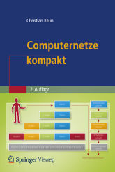 |
Computer networks allow to connect individual computers systems for communication and resource sharing. Communication via computer networks is realized via different protocols of different layers of reference models (OSI reference model, TCP/IP reference model, hybrid reference model). At the beginning of the course, an introduction to the required fundamentals of the computer sciences and computer networks takes place. Next, the protocols and their classification into established reference models is discussed. The main focus of the course is to explain the way, the data is transmitted through the different protocol layers and via different transmission media. The course (lectures, exercises and exam) is held in English language. All slide sets and exercise sheets are available in English and in German language. The content of the English and German slide sets and exercise sheets is identical. A list of technical terms provides this page. The slide sets used in winter term 2013/2014 are the basis for the second edition of the German-language book Computernetze kompakt, which was published in February 2014 by Springer Vieweg. ISBN: 978-3-642-41652-1 |
|
This page is outdated!
Updated and improved lecture materials can be found on the web page of the course Moderne Netzstrukturen in winter term 2014/2015. Diese Seite ist veraltet!Aktualisierte und verbesserte Vorlesungsunterlagen befinden sich auf der Seite Moderne Netzstrukturen im WS1415. |
| Date | Time | Event | Topics |
|---|---|---|---|
| 09.10.2013 | 10:00-11:30 | Lecture | Slide set 1 + 2 |
| 11:45-13:15 | Lecture | Slide set 2 | |
| 16.10.2013 | 10:00-11:30 | Lecture | Slide set 2 + 3 |
| 23.10.2013 | 10:00-11:30 | Lecture | Slide set 4 |
| 30.10.2013 | 10:00-11:30 | Lecture | Slide set 4 + 5 |
| 06.11.2013 | 10:00-11:30 | Lecture | Slide set 5 |
| 13.11.2013 | 10:00-11:30 | Lecture | Slide set 6 |
| 20.11.2013 | 10:00-11:30 | Lecture | Slide set 7 |
| 27.11.2013 | 10:00-11:30 | Lecture | Slide set 7 + 8 |
| 04.12.2013 | 10:00-11:30 | Lecture | Slide set 8 + 9 |
| 11.12.2013 | 10:00-11:30 | Lecture | Slide set 9 |
| 18.12.2013 | 10:00-11:30 | Lecture | Slide set 10 |
| 25.12.2013 | Christmas break | ||
| 01.01.2014 | New Year's Day | ||
| 08.01.2014 | 10:00-11:30 | Lecture | Slide set 10 + 11 |
| 15.01.2014 | 10:00-11:30 | Lecture | Slide set 11 |
| 22.01.2014 | 10:00-11:30 | Lecture | Slide set 12 |
| 29.01.2014 | 10:00-11:30 | Lecture | Q&A session |
| 14.02.2014 | 10:00-11:30 | Exam | The exam covers the slide sets 1-12 |
| Slide sets | Topics |
| Slide set 1 | Organisational information |
| Slide set 2 | Fundamentals of computer networks |
| Slide set 3 | Protocols and reference models |
| Slide set 4 | Physical layer (part 1) |
| Slide set 5 | Physical layer (part 2) |
| Slide set 6 | Data link layer (part 1) |
| Slide set 7 | Data link layer (part 2) |
| Slide set 8 | Data link layer (part 3) |
| Slide set 9 | Network layer (part 1) |
| Slide set 10 | Network layer (part 2) |
| Slide set 11 | Transport layer |
| Slide set 12 | Application layer |
| Exercise sheets | Topics |
| Exercise sheet 1 | Data Rate, Latency, Transmission Media, Transfer Time |
| Exercise sheet 2 | Parallel and Serial Data Transmission, Storing and transmitting Data, Physical and Logical Topology, Network Topologies, Network Cables |
| Exercise sheet 3 | Directional Dependence, Transfer Time, Bandwidth-Delay Product, Layers of Reference Models |
| Exercise sheet 4 | Transmission Media, Shielding of Twisted Pair Cables, Repeaters and Hubs |
| Exercise sheet 5 | Repeaters and Hubs, Encoding Data with Line Codes |
| Exercise sheet 6 | Bridges and Switches, Collision Domain, Spanning Tree Protocol, Addressing in the Data Link Layer |
| Exercise sheet 7 | Framing, Byte Stuffing, Bit Stuffing, Error Detection, Error Correction |
| Exercise sheet 8 | Concepts of Flow Control, Sliding Windows |
| Exercise sheet 9 | Media Access Control, Address Resolution Protocol |
| Exercise sheet 10 | Routers, Layer-3-Switches, Collision Domain, Broadcast Domain, Gateways, Addressing in the Network Layer |
| Exercise sheet 11 | Collision Domain, Broadcast Domain, Addressing in the Network Layer, Checksums in IP Packets, Fragmenting IP Packets |
| Exercise sheet 12 | Forwarding and Path Calculation, Bellman-Ford Algorithm, Dijkstra's Algorithm, Internet Control Message Protocol, Devices in Computer Networks |
| Exercise sheet 13 | Transport Protocols, Header and Payload, Transmission Control Protocol |
| Exercise sheet 14 | Reference Models, Protocols in Computer Networks |
| Written examination (german) | (May 16th 2014) | Time limit: 90 minutes |
| Written examination (english) | (May 16th 2014) | Time limit: 90 minutes |
| Sample solution of the written examination (english) | (May 16th 2014) | |
| Result of the written examination (SS2014) | ||
| Written examination (german) | (February 14th 2014) | Time limit: 90 minutes |
| Written examination (english) | (February 14th 2014) | Time limit: 90 minutes |
| Sample solution of the written examination (english) | (February 14th 2014) | |
| Result of the written examination (WS1314) |
| SS2012 | Exam in German language |
| Result of the evaluation |
As auxiliary material, the students were allowed to use a self prepared, single sided DIN-A4 sheet in the exam. Only handwritten originals were allowed, but no copies. This page contains a selection of the sheets. Some of them are true works of art.
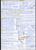 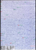 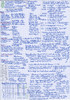 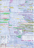 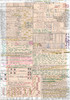 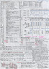 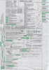 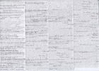 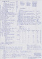 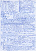The best way to reach me is via email: christianbaun@fb2.fh-frankfurt.de
|
Prof. Dr. Christian Baun Fachhochschule Frankfurt am Main Faculty of Computer Science and Engineering Last updated: November 30th 2014 |